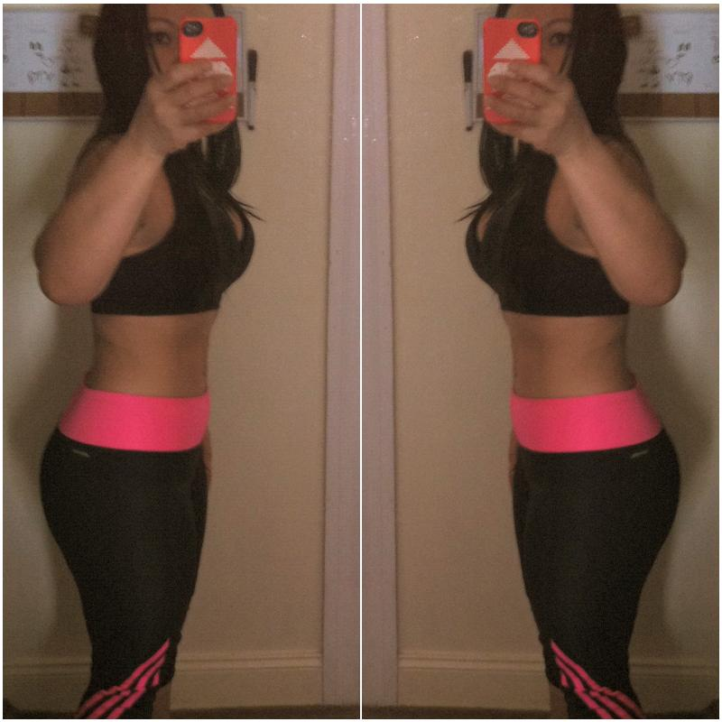
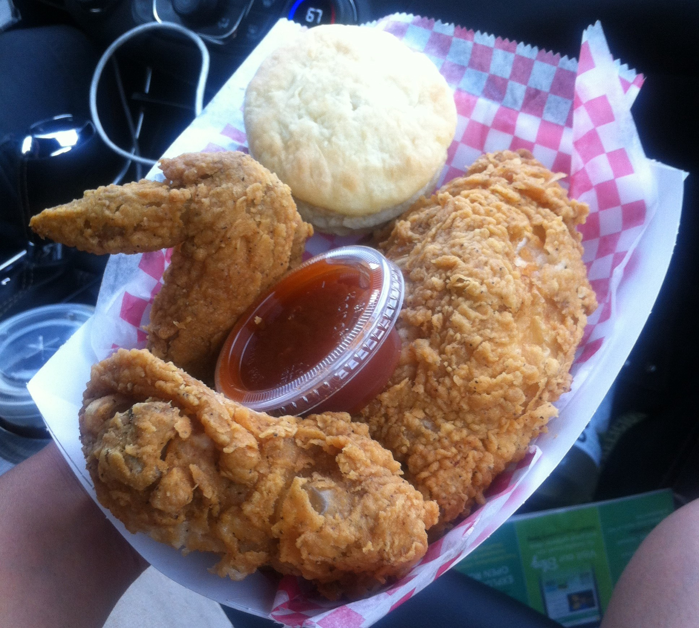

Why do I use whey protein?
Some of my friends and family have asked me why I use whey protein. Simply put, I don't want to get old and decrepit. It's my elixir of youth. When I strength train and have whey protein everyday, my muscles are strong, which keeps stomach small, my hair grows fast, and I don't even need a manicure. Whey protein is my lean muscle food. According to an article on Mercola.com, "Your muscle is your largest energy facility responsible for keeping your metabolic system intact. It essentially protects you against metabolic and hormonal decline, obesity, diabetes, and cardiovascular disease. It also enhances your cognitive function and keeps your body young." You can read the full article here. FYI - The author doesn't mention whey protein until the middle of the page. It's a very long article but also very interesting.
Another reason why I use whey protein is because I have a crazy serious sweet tooth problem. I love ice cream, milkshakes, every kind of cake imaginable, frappuccinos and all that jazz! I used to go to Jamba Juice, Paris Baguette or Starbucks almost every day for my sweet tooth fix. That was until I found their nutritional labels. Those drinks are chock full of sugar, calories and fat. So now I make my own versions at home using whey protein. And it only takes less than a minute to make. An added bonus: no pots, pans or dishes to clean up :D
In addition to staying young inside and out, strength training and whey protein helps me maintain my weight. Some people use whey protein to lose weight while others use it to gain muscle and strength. I just want to eat fried chicken and ice cream cakes without having to spend half of my day in the gym trying to burn it all off. Even though I exercise on a regular basis, at my age (43), it's not enough to burn off all the bad food choices. So, if I know that I'm going to have a heavy meal, I'll have a whey protein snack before and/or after that meal. Whey protein helps me balance out my bad food choice.